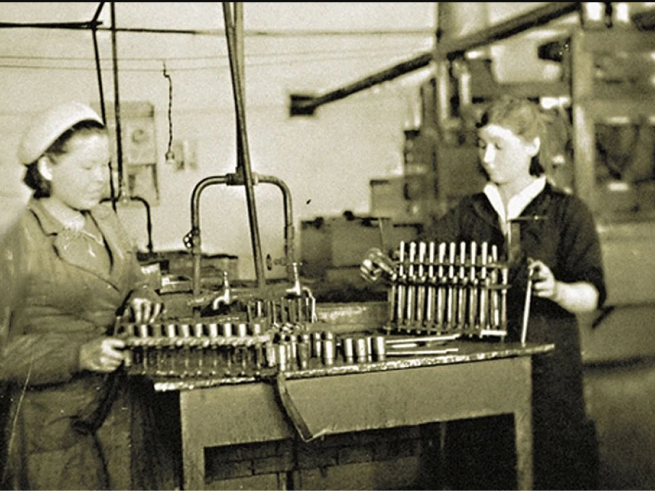

Барнаульский станкостроительный завод
Завод с богатой историей, крепкой корпоративной культурой, амбициозным коллективом.

Интересный факт
Поставлял на фронт: винтовочные патроны калибров 7,62 и 12,7 мм, 14,5 мм с бронебойнозажигательной пулей, патроны к пистолету ТТ. Каждый второй патрон, изготовленный в стране в период войны, произведен на Барнаульском станкостроительном заводе.
Старожилы его помнят под названием завод №17. Был создан в июле 1941 года на базе патронного завода № 17, эвакуированного из Подольска Московской области, станкостроительного производства завода № 60 из Луганска и части опытного завода № 44 из Москвы. Первая партия боевых патронов была отправлена на фронт уже 24 ноября 1941 года.
Посмотреть ещё -->1941-2021
В 2021 году Барнаульскому станкостроительному заводу исполняется 80 лет.
Мы продолжаем осваивать новые изделия и выдерживать качество производимой продукции, реализуем проекты в различных сферах промышленности и коммунального хозяйства.
БСЗ сегодня это:
- 14 предприятий бизнес-центров
- 2000 сотрудников
- №1 по экспорту продукции с СФО
Передовые решения
Освоение новых типов патронов
Освоение новых типов патронов
Жилично-коммунальное хозяйство
Стимулирование роста профессионалов
Передовые решения и изобретения - заслуга высококвалифицированных инженеров завода.
- Для адаптации вновь принятых работников реализуется программа «Наставничество».
- Действует система профессионального обучения и переподготовки работников.
- Специалисты за средства предприятия могут пройти обучение в магистратуре АлтГТУ им. И.И. Ползунова по направлению «Конструкторско-технологическое обеспечение машиностроительных производств»
- Для мотивации персонала ежегодно проводятся конкурсы профессионального мастерства «Инженерное решение года» и «Мастер-золотые руки».